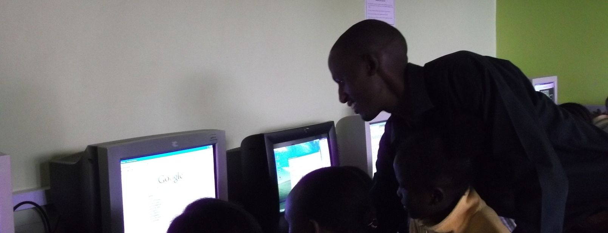

Community ICT Access
We set up fully functional ICT centers with computers and internet connection
Advocacy for social development
We help develop the community by granting them access to ICT tools for development

Training
We provide and facilitate computer literacy training

ICT enabled community innovation
We help develop the community by granting them access to ICT tools for development

Awareness
We encourage and inspire communities to harness and use the benefits of ICT technologies